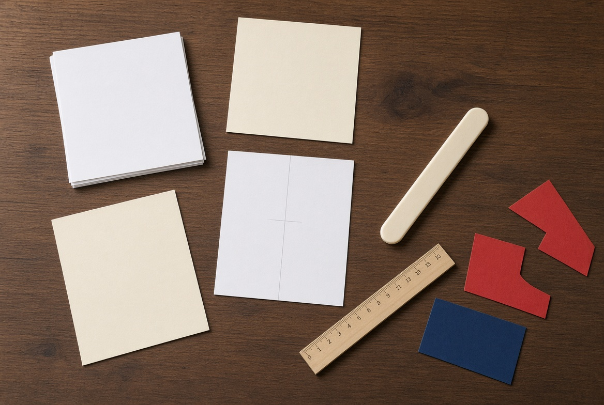
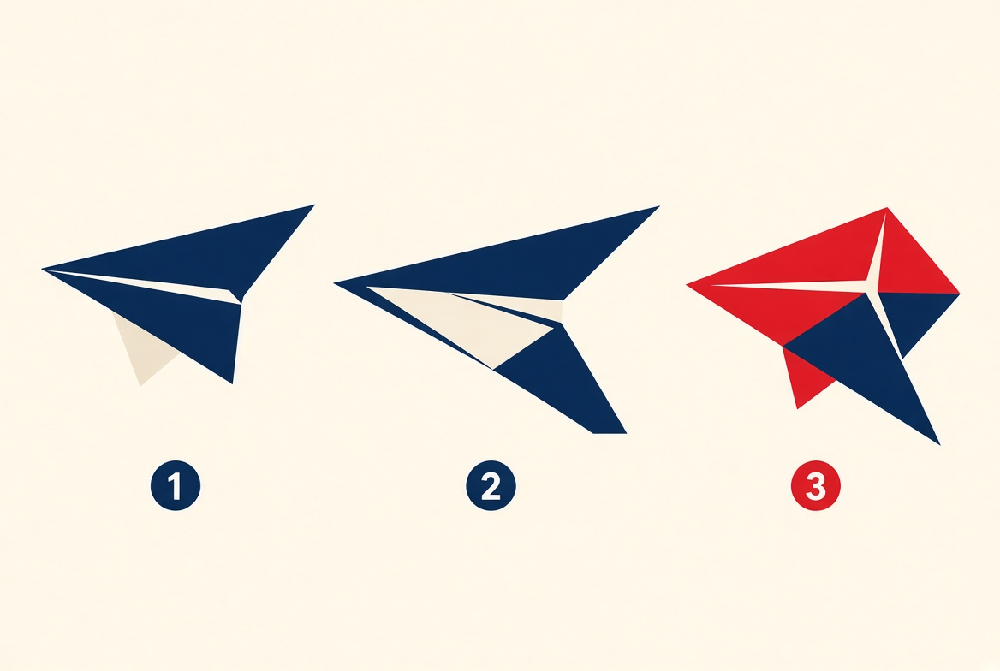

1. Midtlinjen er lov
Fold arket langs midten først, åpne det igjen, og bruk den synlige ryggen som referanse. Alle hjørner skal møte den linjen, ikke «omtrent midt på».
Klubbens verksted
Her ligger det vi faktisk gjør på klubbkvelder: velge papir, folde symmetrisk, låse nesen, og så trimme flyet til det slutter å krangle med lufta. Les først de tre prinsippene, så modellene.
Før du folder
Standard i klubben er A4, 80 g/m² kopipapir. Det er stivt nok til å holde vingeform, og lett nok til å gli. Tyngre papir (90–100 g) gir skarpere dart og tåler hardere kast. Lettere papir kan gi lengre seiling innendørs, men slår seg lettere.
Unngå fuktige hender og mykt avisark. Et skjevt utgangspunkt gir et skjevt fly, uansett hvor pent du folder resten.

Fold arket langs midten først, åpne det igjen, og bruk den synlige ryggen som referanse. Alle hjørner skal møte den linjen, ikke «omtrent midt på».
Fold høyre side. Speil venstre side etter den, ikke etter hukommelsen. Et fly som er 2 mm tyngre på én vinge, ruller.
En slapp fold spretter opp i lufta. Gå over hver kant med neglen. Nesen skal være fast, vingene flate, og ryggen rett som en kjøl.

Modellene
Start med dart for å lære presisjon. Gå videre til Nakamura når du vil at lagene skal holde. Bruk seileren når målet er tid i lufta, ikke fart gjennom gangen.
Modell 1 · lett · distanse
Det første flyet de fleste har foldet. Spiss nese, smale vinger, rask og direkte. Bra innendørs i lange korridorer, og det beste stedet å øve på symmetri.
Legg A4 i stående format. Fold arket langs midten på langs (langside mot langside). Trykk hardt. Åpne igjen. Du har nå midtlinjen.
Fold øvre venstre hjørne inn til midtlinjen, slik at den korte kanten legger seg langs ryggen. Gjenta med øvre høyre hjørne. Du skal få et jevnt hus-tak på toppen.
Fold de nye skråkantene inn til midtlinjen en gang til. Nesen blir spissere og tyngre. Dette er dartens «motor».
Fold hele flyet sammen langs den opprinnelige midtlinjen, med de tidligere foldene inni. Ryggen skal være en skarp kjøl.
Fold hver vinge ned slik at vingens forkant ligger parallelt med kjølen. La det stå igjen en kjølhøyde på omtrent 1,5 cm. Speil den andre vingen nøyaktig.
Åpne vingene til en svak V sett bakfra (dihedral). Kast hardt og litt oppover, omtrent 20–30 grader.
Modell 2 · lett/middels · allround
Tegnet av Eiji Nakamura. Låsefliken holder lagene sammen, så flyet ikke åpner seg i lufta slik en slapp dart gjør. Dette er klubbens standardfly: rolig, stabilt og tilgivende.
Fold A4 på langs, åpne igjen. Midtlinje som vanlig.
Fold de to øvre hjørnene inn til midtlinjen slik at du får et trekanttaks-nese.
Fold hele trekanten rett ned, slik at tuppen lander på midtlinjen. Bruk midtlinjen som sikte, ellers blir nesen skjev.
Fold de nye øvre hjørnene inn mot midtlinjen, men ikke helt i spiss. La det være en liten flat kant øverst. Punktene skal møtes omtrent en tommelbredde fra bunnen av den nedfoldede lappen.
Fold den lille lappen nederst i nesen opp og over de to hjørnene. Dette er selve Nakamura-låsen. Den klemmer lagene fast.
Fold flyet i to langs midten. Fold vingene slik at forkanten blir parallell med bunnen av kjølen. Speil nøyaktig.
Sett vingene i en myk Y sett bakfra — ikke T, ikke M. Kast vannrett med middels kraft. Nakamura skal gli, ikke piske gjennom lufta.
Modell 3 · middels · tid i lufta
Her er målet glideforhold, ikke toppfart. Bredere vinger, mer løft, lavere synkehastighet. Fungerer best i stillestående luft — gymsal, stue med høyt tak, eller en vindstille kveld ute.
Start som dart: midtlinje, så øvre hjørner inn mot midten.
Fold den spisse toppen rett ned, et stykke ned på arket (cirka 4–6 cm). Du flytter vekt fram, men beholder areal bak.
Fold de øvre skråkantene inn mot midtlinjen igjen, men stopp før du lager en knivspiss. En litt stump nese er mer tilgivende på en seiler.
Fold i to. Nå kommer forskjellen: vingene skal være brede. Fold vingen ned slik at kjølen bare blir 1 cm høy, og la vingen strekke seg nesten helt ut til papirkanten.
Lag små vinglets: fold ytterste 8–12 mm av hver vingetipp opp. De demper rulling.
Bøy bakkantene på vingene svakt opp (en «smile»-profil). Det gir løft bakerst og hindrer at nesen stuper.
Kast mykt, nesten horisontalt. Tenk at du skyver flyet inn i lufta, ikke kaster det bort.
Folding er halve jobben. Den andre halvdelen er å lese flukten og endre én ting om gangen. John Collins kaller det å kalibrere flyet. I klubben sier vi: ikke bygg et nytt fly før du har spurt det gamle hva det prøver å fortelle deg.
| Det du ser | Sannsynlig årsak | Hva du gjør |
|---|---|---|
| Stiger brått, taper fart, faller på halen (steiling) | For mye oppdrift bakerst, eller kastvinkel for bratt | Bøy bakkantene svakt ned. Kast flattere og mykere. |
| Stuper nesen i bakken | Tyngdepunkt for langt fram, eller bakkantene peker ned | Bøy bakkantene svakt opp. Sjekk at vingene ikke er foldet for langt fram. |
| Ruller og svinger alltid samme vei | Én vinge er brattere, tyngre eller mer oppbøyd | Sammenlign vingene mot lyset. Juster den vingen som dykker ned. |
| Flyr i en stor bue / spiral | Roret (bakkroppen) er vridd, eller vingene har ulik vinkel | Rett kjølen. Speil vinglets. Kast rett fram uten sidespinn. |
| Åpner seg i lufta | Løse lag i nesen | Bytt til Nakamura-lås, eller sett en bitte liten teipbit på nesen. |
Grip langt fram mot nesen. Hardt, rent kast 20–30° opp. Tenk spyd, ikke frisbee. Spin ødelegger dart.
Grip under midten. Skyv fram i skulderhøyde. 60 prosent av vanlig kraft er ofte nok. La flyet finne anfallsvinkelen selv.
Sett bakfra skal vingene danne en svak Y. For flat = ustabil rulling. For bratt V = flyet vugger og taper løft.
Hvis kanten ikke er knivskarp, bygger flyet motstand og mister form. Gå over alle folder to ganger.
Fold én vinge ferdig, og bruk den som mal for den andre. Ikke fold «på øyemål» to ganger.
Endre én flik, kast tre ganger, så vurder. Tre samtidige bøyer gir deg null informasjon.
Kopipapir har en fiberretning. Hvis arket slår seg, snu det 90 grader og prøv et nytt ark fra samme pakke.
Bildene og stemmene er på originalsprog. Det går fint — foldene er internasjonale. Sett videoen på 0,75× første gang du folder en ny modell.
Når du kan folde Nakamura blindt og forklare hvorfor den svinger venstre, er du ikke lenger gjest. Da er du i klubben.